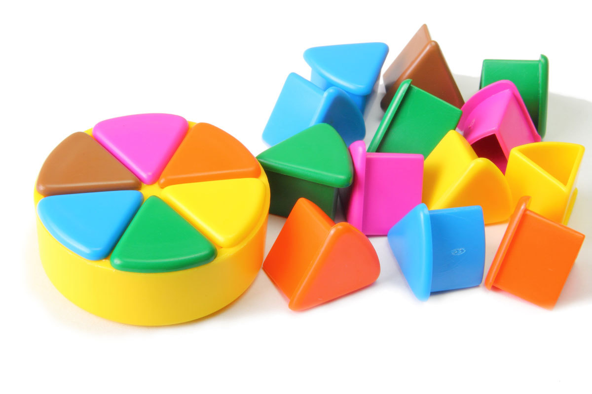

La Nostra Història
L'origen del joc que va canviar les reunions familiars per sempre.
Com va començar tot?
El Trivial Pursuit no va néixer en una oficina de disseny de joguines, sinó d'una tarda avorrida de desembre de 1979 a Mont-real. Des de llavors, s'ha convertit en un fenomen cultural global.
1979: La idea original
Chris Haney i Scott Abbott van inventar el joc en només unes hores. Després de buscar finançament, el 1981 van llançar la primera edició comercial, que es va esgotar ràpidament.

Més de 100 milions de jocs
Actualment, el Trivial Pursuit es ven a més de 26 països i s'ha traduït a 17 idiomes, mantenint-se com el rei dels jocs de preguntes.